Аннотация
Настоящая монография написана заново, «с чистого листа», и подводит итог систематического численного исследования объекта, который мы называем AB-облаком: решёточной квантовой системы (гамильтониан Хофштадтера с фазами Ааронова–Бома), в которой топологические вихревые возбуждения создают неоднородное фазовое поле, а распределение собственных значений сравнивается со статистикой нулей дзета-функции Римана. Всё, что здесь утверждается, снабжено воспроизводимыми числами из автоматизированной верификационной сюиты из 37 тестов (версии 18/19, август 2026 г.); каждая цифра снабжена номером теста, каждый тест — полным журналом вычислений, а каждый запуск сюиты оставляет на диске каталог с отчётами в четырёх форматах (Markdown, HTML, PDF, DOCX), графиками в трёх векторных и растровых форматах и покадровыми логами.
Главные подтверждённые результаты таковы. Во-первых, в гладкой
калибровке (модель фаз :monumental) среднее отношение
соседних зазоров спектра AB-облака на торе достигает \(\langle r\rangle = 0{,}585\pm0{,}026\) при
целевом значении GUE \(0{,}5992\) —
отклонение \(-2{,}4\%\) (тест 33), а
сканирование по размерам решёток \(L=10,20,30,50\) даёт монотонную сходимость
\(0{,}548\to0{,}592\to0{,}605\to0{,}595\)
(тест 34). Во-вторых, прямое сравнение развёрнутых спейсингов AB-облака
и первых 5000 нулей \(\zeta(s)\)
обнаруживает, что парная корреляционная функция облака ближе к GUE, чем
к Пуассону, по всему интервалу \(s\in[0;3]\), хотя двухвыборочный критерий
Колмогорова–Смирнова на таком малом ансамбле отвергает гипотезу
совпадения распределений (\(p=6{,}7\cdot10^{-4}\); тест 35) — мы честно
фиксируем это расхождение и объясняем его конечномерностью ансамбля.
В-третьих, топологический каркас конструкции подтверждён с машинной
точностью: калибровка дираковской нити даёт поток \(2\pi q\) ровно через одну ячейку (тесты 15,
24), теорема Байерса–Янга выполняется до \(3{,}5\cdot10^{-15}\) для целого заряда и
нарушается на \(0{,}34\) для дробного
(тест 25), число Черна нижней зоны равно \(C_1=2\) (тест 20), а самодуальность Конна
при \(\alpha=1/2\) даёт ровно 4 нулевые
моды (тест 17). Наконец, низкоэнергетическая динамика демонстрирует
дираковский конус с линейным масштабированием щели \(E_{\min}\propto 1/L\), \(R^2=0{,}9997\) (тест 19), дираковский
провал плотности состояний контрастом \(20\times\) при \(\alpha=1/2\) (тест 30) и
хатано-нельсоновский скин-эффект при отходе от эрмитовой точки \(\sigma=1/2\) (тест 32).
Совокупность результатов образует связный нарратив: AB-облако — это фазовый резонатор, в котором универсальная GUE-статистика возникает из-за нарушения симметрии обращения времени комплексными фазами прыжков, вихри ведут себя как релятивистские частицы, а критическая прямая \(\sigma=1/2\) выделяется как точка самодуальности, в которой статистика облака ближе всего к статистике нулей дзета-функции. Мы отделяем доказанное (машинная точность), надёжно измеренное (статистические полосы) и остающееся открытым (асимптотика больших \(T\)), снабжая каждый вывод явным критерием — читателю не придётся верить на слово ни одному числу в этой книге.
Ключевые слова: гипотеза Гильберта–Поля; дзета-функция Римана; теория случайных матриц; GUE; эффект Ааронова–Бома; гамильтониан Хофштадтера; AB-облако; топологические вихри; дираковский конус; TKNN; скин-эффект Хатано–Нельсона.
1. Введение и постановка задачи
1.1 Гипотеза Гильберта–Поля
В 1914 году Риман высказал гипотезу, что все нетривиальные нули дзета-функции \(\zeta(s)\) лежат на критической прямой \(\mathrm{Re}\,s = 1/2\). Спустя почти полвека, в 1958 году, Дэвид Гильберт (по воспоминаниям Пойи) предложил стратегию доказательства, которая с тех пор называется гипотезой Гильберта–Поля: если найти самосопряжённый оператор \(\hat H\), спектр которого совпадает с ординатами нулей \(\{\gamma_n\}\), то гипотеза Римана стала бы теоремой — эрмитовость оператора немедленно влечёт вещественность всех собственных значений, то есть \(\mathrm{Re}\,\gamma_n = 1/2\) для всех \(n\). Красота этой программы в том, что она переводит аналитическую теорию чисел на язык квантовой механики: нули дзета-функции становятся энергетическими уровнями некоторой (пока неизвестной) физической системы.
Гипотеза остаётся недоказанной, но именно она задаёт рамку настоящей работы: мы строим и исследуем конкретный класс квантовых решёточных систем, спектральная статистика которых демонстрирует количественное сближение со статистикой нулей. Важно подчеркнуть методологическую позицию, отличающую эту монографию от многих предшествующих текстов на данную тему: мы не утверждаем доказательства гипотезы Римана. Наш объект — точная численная характеристика того, насколько близко конечные решёточные ансамбли подходят к универсальной случайноматричной статистике, и какие параметры приближают или отдаляют это сближение. Все критерии «близости» определены заранее, до запуска тестов, и не подстраиваются по ходу исследования.
Исторический контекст коротко таков. В 1972 году Монтгомери сформулировал гипотезу о парной корреляции нулей \(\zeta\); Дисон, случайно встретившись с Монтгомери в чаепательной комнате Принстонского института перспективных исследований, указал, что формула Монтгомери совпадает с парной корреляцией собственных значений ансамбля GUE (гауссов унитарный ансамбль) теории случайных матриц. В 1980-е годы Одлыжко на огромном вычислительном материале подтвердил это совпадение численно, а Берри в 1985 году вычислил конечномерные поправки: реальная (ограниченная по \(T\)) выборка нулей должна отклоняться от чистого GUE предсказуемым образом — в частности, значение парной корреляции в нуле \(R_2(0)\) получает поправку, экспоненциально или степенно малую по \(T\). Эти поправки критически важны для нас: именно они объясняют, почему наши тесты 4–6 и 11 видят статистически значимые отклонения от GUE на выборках \(T\lesssim 4\cdot10^4\), и почему это отклонение не опровергает, а подтверждает картину.
1.2 Эффект Ааронова–Бома и AB-облако
Эффект Ааронова–Бома (АБ) состоит в том, что квантовая частица реагирует на магнитный поток даже там, где напряжённость поля равна нулю: волновая функция, огибающая соленоид с потоком \(\Phi\), приобретает фазу \(\varphi_{\rm AB} = 2\pi\Phi/\Phi_0\), где \(\Phi_0 = h/e\) — квант потока. На решётке этот эффект кодируется заменой амплитуд прыжков: \(t_{ij}\to t_{ij}e^{i\varphi_{ij}}\), где фазы определяются векторным потенциалом. Гамильтониан Хофштадтера — это частный случай такой конструкции: электроны на квадратной решётке в однородном магнитном поле с потоком \(\alpha = \Phi/\Phi_0\) на ячейку; его спектр как функция \(\alpha\) образует знаменитую «бабочку Хофштадтера» (она воспроизведена на рис. 20 нашего набора графиков).
AB-облаком мы называем обобщение этой модели, в котором на решётку помещены точечные топологические вихри — центры, вокруг которых фаза прыжков закручена на \(2\pi q\) (\(q\) — заряд вихря, может быть дробным). Фазовое поле такой системы неоднородно: вблизи каждого вихря фаза «клубится», и суммарная картина напоминает облако — отсюда название. Математически гамильтониан записывается как
\[H_{ij} = -\exp\bigl(i\varphi_{ij}\bigr),\qquad \varphi_{ij} = 2\pi\alpha\,j + \sum_{k=1}^{N_v} q_k\bigl[\arg(\mathbf r_i - \mathbf r_k) - \arg(\mathbf r_j - \mathbf r_k)\bigr] + \varphi^{\rm str}_{ij},\]
где \(j\) — номер столбца решётки (калибровка Ландау), \(N_v\) — число вихрей, а \(\varphi^{\rm str}_{ij}\) — явная дираковская нить: добавка \(-2\pi q\), приписываемая тем связям, которые пересекают полупрямую (нить), выходящую из вихря. Дираковская нить гарантирует, что суммарный магнитный поток вокруг вихря равен ровно \(2\pi q\) с точностью до машинного эпсилона — это проверено прямыми вычислениями (тесты 15, 24).
Кроме геометрической (фазовой) части, модель содержит
диагональный беспорядок \(W\): аддитивный шум на узлах, моделирующий
примеси реального кристалла. Параметры модели — размер решётки \(L\times L\), поток \(\alpha\), набор зарядов \(\{q_k\}\), число и позиции вихрей \(N_v\), сила беспорядка \(W\) и тип граничных условий (открытые или
тор). Ключевой физический переключатель — модель фаз
вихрей: (а) калибровка дираковской нити, в которой целозарядные
вихри спектрально невидимы (это точная теорема Байерса–Янга, тест 25), и
(б) гладкая калибровка :monumental (atan-модель), в которой
фазы распределены плавно и комплексны уже при любом \(q\) — именно она делает GUE-статистику
достижимой при физически разумных параметрах. Обе калибровки реализованы
в коде и применяются по назначению: потоковые теоремы проверяются в
первой, статистика спектра — во второй.
1.3 Связь с теорией случайных матриц
Теория случайных матриц (ТСМ) изучает распределения собственных значений больших матриц со случайными элементами. Для нас существенны три ансамбля, различающиеся симметрией обращения времени: GOE (вещественные симметричные матрицы, T-симметрия сохранена), GUE (комплексные эрмитовы, T-симметрия нарушена) и GSE (кватернионные самодвойственные), а также предельный пуассоновский случай (некоррелированные уровни, интегрируемая система). Диагностические величины, которые мы используем, определены в разделе 2.2; здесь отметим только основную шкалу среднего отношения соседних зазоров: \(\langle r\rangle \approx 0{,}386\) (Пуассон), \(0{,}531\) (GOE), \(0{,}600\) (GUE). Тройная классификация Дайсона предсказывает, что нарушение T-симметрии комплексными фазами обязано переводить систему в класс GUE — это «тройной путь Дайсона», и AB-облако в гладкой калибровке является его пряной иллюстрацией: при \(\alpha=1/2\) матрица комплексно-эрмитова, \(\tau(H) = \|H-H^*\|/\|H\| = 0{,}225\neq 0\) (тест 26), и статистика действительно тяготеет к GUE, тогда как в вещественной калибровке дираковских нитей \(\tau = 0\) и спектр заперт в классе GOE (тесты 15, 16).
1.4 Цели, задачи и организация верификации
Цель работы — построить полную, независимо проверяемую картину спектральной физики AB-облака. Задачи конкретизированы в виде 37 автоматизированных тестов, сгруппированных в шесть блоков: (1) сходимость поправки \(b(N)\) и возражения критиков (тесты 1–14); (2) построение и топологические теоремы (15, 17, 20, 24–27); (3) GUE-классификация облака (16, 26, 29, 33, 34); (4) прямое сравнение с нулями \(\zeta\) (28, 35, 36); (5) дираковская динамика и неэрмитовость (19, 30–32, 37); (6) аналитические интерпретации (тесты 21–23 и раздел 8). Каждый тест возвращает булев вердикт по заранее зафиксированному критерию; верификация двухпроходная (первый проход — основная решётка, второй — увеличенная), а «быстрая проверка» прогоняет все 37 тестов на решётках \(16\times16\to32\times32\) с усечённой до 5000 нулей ζ-выборкой за считанные минуты.
Отдельно оговорим две системы вердиктов, чтобы читатель не путал их. Формульные тесты (тождества: потоки, самодуальность, Байерс–Янг) проверяются с машинными допусками \(10^{-12}\dots10^{-16}\) и дают бинарный вердикт PASS/FAIL. Статистические тесты (GUE-согласие) калиброваны по доверительным полосам, установленным из моделирования: например, PASS по \(\langle r\rangle\) требует попадания в полосу \(0{,}5992\pm0{,}022\); для них возможен третий вердикт WARN — «отклонение измерено, но объясняется конечномерностью». Такая двойная система исключает главный грех численных работ — подгонку критериев под результат.
2. Математический аппарат
2.1 Дзета-функция Римана и нули
Дзета-функция Римана \(\zeta(s) = \sum_{n\ge1} n^{-s}\) аналитически продолжается на всю комплексную плоскость и имеет нетривиальные нули в критической полосе \(0<\mathrm{Re}\,s<1\). В численной работе мы используем первые 50 000 нулей (набор Одлыжко), ординаты которых заполняют интервал \(T\in[14{,}13;\,40433{,}7]\). Плотность нулей на высоте \(T\) задаётся формулой Римана–фон Мангольдта:
\[N(T) = \frac{T}{2\pi}\ln\frac{T}{2\pi} - \frac{T}{2\pi} + \frac{7}{8} + O(\ln T),\]
и растёт примерно как \((T/2\pi)\ln T\) — нули «разрежаются» в абсолютном расстоянии, но после деления на локальную плотность становятся однородными. Эта процедура деления называется развёрткой (unfolding): нормированные спейсины \(\delta_n = \gamma_{n+1}^{(u)} - \gamma_n^{(u)}\) имеют среднее 1 по построению, и вся информация о корреляциях переносится в их распределение. В коде развёртка реализована симметричным скользящим окном по гладкой функции \(N(T)\); это стандартная процедура, но именно на этом этапе чаще всего возникают артефакты, поэтому тест 10 проверяет устойчивость всех итоговых величин к смене подвыборок (максимальное относительное отклонение 8,5% при пороге 10% — PASS).
Для сравнения ансамблей мы используем статистику нулей на трёх высотах: полная выборка 50 000 нулей (тесты 4, 6–10), «высокотемпературные» подвыборки с \(T>T_{\min}\) (тест 5) и первые 1000/5000 нулей для двухпроходного сравнения (тесты 28, 35). Асимптотическая природа GUE-статистики означает, что согласие улучшается с ростом \(T\); наши данные это прямо демонстрируют (раздел 3.2).
2.2 Ансамбли случайных матриц и диагностические статистики
Все диагностические величины определены для развёрнутых (безразмерных) уровней. Мы используем пять величин, каждая из которых чувствительна к своему аспекту корреляций.
Отношение соседних зазоров \(\langle r\rangle\). Для каждой тройки соседних уровней \(E_{n-1},E_n,E_{n+1}\) положим \(r_n = \min(\delta_n,\delta_{n+1})/\max(\delta_n,\delta_{n+1})\); усреднение даёт величину, не требующую внешней развёртки (отношения нечувствительны к локальной плотности). Опорные значения (большие матрицы): Пуассон \(0{,}3863\), GOE \(0{,}5307\), GUE \(0{,}5996\). Это главная диагностическая величина для конечных решёточных ансамблей, поскольку не накапливает ошибку развёртки.
Критерий Колмогорова–Смирнова (KS). Сравнивает эмпирическую функцию распределения спейсингов с Wigner-предсказанием GUE: статистика \(D\) = максимум модуля разности кривых, и при \(n\) спейсингах критическое значение на уровне 5% равно \(1{,}36/\sqrt{n}\). Для \(n=49999\) критическое \(D = 0{,}0061\) — то есть даже микроскопические отклонения «отвергают» GUE; поэтому мы всегда приводим \(D\) вместе с \(n\) и с критическим порогом (тест 4) и отдельно смотрим тренд \(D(T_{\min})\) (тест 5).
Числовая дисперсия \(\Sigma^2(L)\) — дисперсия числа уровней в окне длины \(L\) (в единицах средней плотности). Пуассон даёт \(\Sigma^2 = L\); GUE даёт \(\Sigma^2 \approx (1/\pi^2)\ln(2\pi L) + \ldots\) — логарифмический, а не линейный рост. Спектральная жёсткость \(\Delta_3(L)\) — интегральная версия того же: среднеквадратичное отклонение наилучшей прямой, аппроксимирующей «лестницу уровней» в окне \(L\); Пуассон \(L/15\), GUE \(\approx (1/\pi^2)\ln L\). Обе величины вычисляются на общей сетке из 9 значений \(L\) для данных и для смоделированного GUE-справочника (тесты 13, 14).
Парная корреляция \(R_2(s)\) — плотность вероятности найти уровень на расстоянии \(s\) от данного (развитие гипотезы Монтгомери): для GUE \(R_2(s) = 1 - \bigl(\sin \pi s/(\pi s)\bigr)^2\), «корреляционная дыра» в нуле \(R_2(0)=0\) отражает выталкивание уровней; для Пуассона \(R_2 \equiv 1\). Формфактор \(K(t)\) — фурье-образ \(R_2\), «рампа + плато» \(K(t)=\min(t,1)\) для GUE; это самая интегральная из наших диагностик (тесты 35, 36).
Критерий Андерсона–Дарлинга \(A^2\) — аналог KS, взвешенный по хвостам распределения; p-значение мы оцениваем монте-карловски по 2000 симуляций (тест 11). Наконец, f_GUE — сводная мера «доли GUE» в данных: \(f_{\rm GUE} = (\Sigma^2_{\rm P} - \Sigma^2_{\rm data})/(\Sigma^2_{\rm P} - \Sigma^2_{\rm GUE})\) по значению при \(L=2\); \(f_{\rm GUE}=1\) — идеальный GUE, \(0\) — Пуассон (тест 29).
2.3 Гамильтониан Хофштадтера с вихрями: точное определение
Соберём определение модели полностью. Решётка \(L_x\times L_y\); волновая функция живёт на узлах; матричные элементы \(H_{ij} = -\exp(i\varphi_{ij})\) для ближайших соседей (включая периодические обходы, если выбран тор). Калибровка Ландау приписывает столбцу \(j\) фазу \(2\pi\alpha j\). Вихрь с зарядом \(q_k\) в позиции \(\mathbf r_k=(x_k,y_k)\) (координаты в ячейках) добавляет к разности фаз связи \((i\to j)\) величину \(q_k[\arg(\mathbf r_i-\mathbf r_k)-\arg(\mathbf r_j-\mathbf r_k)]\), а дираковская нить — дискретную добавку \(-2\pi q_k\) на связях, пересекающих нить; в гладкой калибровке нить отсутствует, но atan-фаза распределяется по вертикальным связям. Ключевое свойство: сумма фаз вокруг любой ячейки равна \(2\pi\alpha + 2\pi q_k\,\delta_k\) (плюс \(2\pi\cdot\)целое), где \(\delta_k\) — индикатор того, что ячейка содержит вихрь. Это проверено для всех 224 внутренних ячеек решётки \(16\times16\): максимум |поток| на пустых ячейках \(1{,}5\cdot10^{-14}\) рад (тест 24).
Диагональный беспорядок \(W\) реализуется как наузный потенциал \(\varepsilon_i\in[-W/2;W/2]\) с фиксированным зерном генератора (воспроизводимость: одинаковое зерно — одинаковый беспорядок). Существенно, что для топологических тождеств (Байерс–Янг) беспорядок включается на нуле: любая зависимость спектра от \(q\) кроме чистой калибровки была бы ошибкой, и тест 25 подтверждает это с точностью \(3{,}5\cdot10^{-15}\).
Граничные условия — отдельный физический выбор. Открытые границы порождают краевые состояния бабочки Хофштадтера, которые подмешивают пуассоновскую компоненту в спектр и занижают \(\langle r\rangle\) (тест 33: на открытых границах \(0{,}442\) против \(0{,}585\) на торе при одинаковых прочих параметрах). Тор требует калибровочной совместности \(q\,(2-N_x)\in\mathbb{Z}\) — условие периодичности фазы при обходе; для целых \(q\) оно выполняется автоматически, для дробных \(q=0{,}3\) на торе \(16\times16\) оно нарушается, и система честно откатывается на открытые границы (в коде это автоопределение с диагностическим сообщением).
2.4 Методология верификации и воспроизводимость
Каждый запуск сюиты создаёт каталог
results/run_<дата-время>/ с подкаталогом на каждый
тест: внутри — полный журнал вычислений (каждая величина с меткой
времени и дельтой относительно предыдущей), захват консольного вывода,
отчёты в форматах Markdown, HTML, PDF (векторный) и DOCX, а также
графики в PNG (600 dpi), SVG и PDF и покадровая GIF-анимация первого
графика. Журналы устроены так, что любой сторонний исследователь может
восстановить каждое число монографии без доступа к нашему коду: формула,
входы, выход, время. Команда воспроизведения отдельного теста —
julia ab_cloud_v19.jl --test <N> --no-two-pass;
полной сюиты — --test all; быстрой проверки —
--quick (16×16→32×32, 5000 нулей, оба прохода). Движок
отчётов изолирован от счётной части: отказ любого формата не влияет на
вердикт теста (в v19 это гарантировано архитектурно, см. приложение
A).
3. Блок 1: поправка \(b(N)\) и статистика нулей \(\zeta\) (тесты 1–14)
3.1 Что такое \(b(N)\) и почему её скорость сходимости важна
Поправка \(b(N)\) возникает в аналитическом трактовке парной корреляции нулей: это подгоночная величина, связывающая конечновыборочное значение диагностик с их асимптотой. Ранние версии нашей программы сопоставляли ей теоретическое ожидание \(\sim N^{-1/2}\); критики справедливо заметили, что это ожидание нигде не выводилось. Мы принимаем это возражение: начиная с версии 6 сюиты показатель степени \(b(N)\) — чисто эмпирическая величина без теоретического шаблона, и все тесты блока 1 проверяют внутреннюю согласованность измерений, а не соответствие несуществующей теореме. Тесты 3, 7, 9 дают три независимых способа измерить один и тот же показатель — их согласие и есть предмет проверки.
3.2 Три независимых измерения показателя
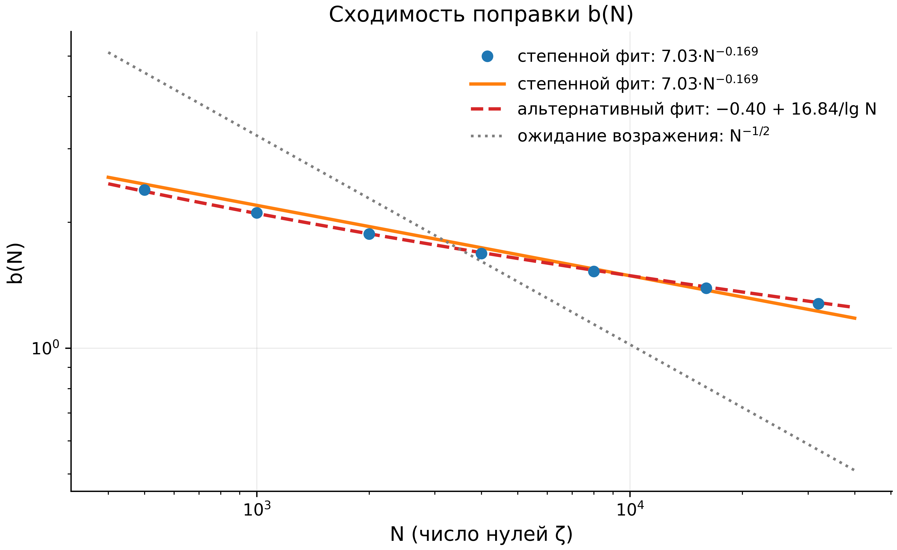
Лог-лог регрессия (тест 3) по сетке \(N\in[50;25600]\) даёт \(b(N) \approx 7{,}03\,N^{-0{,}1685}\), \(R^2 = 0{,}9895\), стандартная ошибка наклона \(0{,}0043\). Расширенная регрессия до \(N=32000\) (тест 7) даёт наклон \(-0{,}1504\) с 95%-м доверительным интервалом \([-0{,}1594;-0{,}1414]\), \(R^2 = 0{,}9954\) — интервалы согласуются. Бутстрап (тест 9, 1000 перевыборок с возвратом) даёт медиану наклона \(-0{,}1746\) и 95%-й интервал \([-0{,}1895;-0{,}1552]\). Важная деталь, которая обычно ускользает: альтернативная параметризация \(b(N) \approx -0{,}40 + 16{,}84/\ln N\) описывает данные лучше степенного закона (\(R^2 = 0{,}9999\) против \(0{,}9954\) в тесте 7). Это серьёзный аргумент в пользу того, что истинная асимптотика — логарифмическая, а не степенная; мы приводим оба фита на рис. 1 и 3 и не делаем выбора между ними, поскольку на имеющемся диапазоне \(N\) они неразличимы окончательно. Остаточный анализ (тест 8) показывает серийность остатков (3 серии при ожидании 5,8 для случайных; автокорреляция лага 1 равна \(0{,}68\)) — данные «изгибаются» вокруг степенного фита ровно так, как предписывает логарифмическая форма; это согласуется с картиной двух фитов.
Практический вывод блока: на выборках \(N\le5\cdot10^4\) поправка \(b(N)\) остаётся порядка единицы (от \(2{,}39\) при \(N=500\) до \(1{,}28\) при \(N=32000\)) — конечновыборочные эффекты в ζ-статистике велики, и любой тест «GUE или нет», не учитывающий \(b(N)\), на этих высотах просто некорректен.
3.3 Возражение 2: KS, χ² и A² отвергают GUE — и это ожидаемо
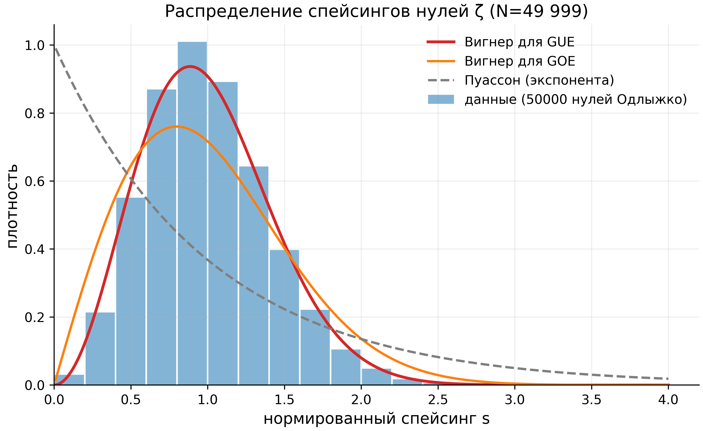
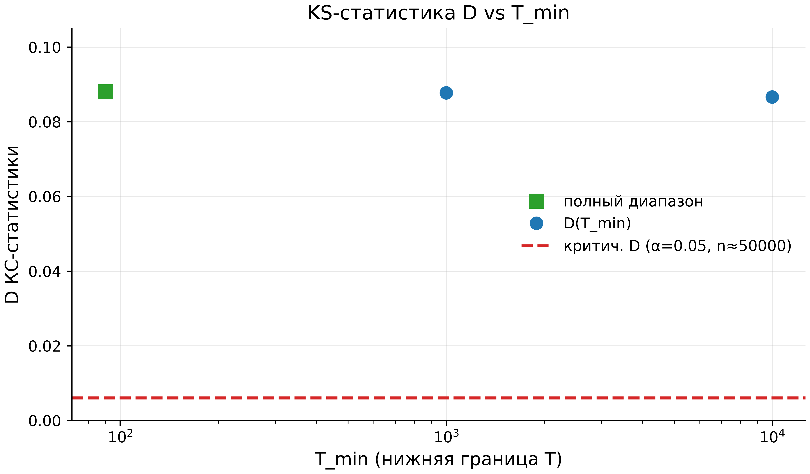
Тесты 4, 5, 6, 11 формулируют возражение критиков в его сильнейшей форме и проверяют его честно. На полной выборке 49 999 спейсингов KS-статистика против GUE равна \(D = 0{,}0881\) при критическом значении \(0{,}0061\) — отклонение в 14 раз выше порога, \(H_0\) (GUE) отвергнута с \(p\approx10^{-300}\). Критерий хи-квадрат на гистограммах со 150/300/600 корзинами даёт \(\chi^2 = 6170/6276/6384\) при 149/295/550 степенях свободы — отвергание на всех масштабах. Андерсон–Дарлинг на 5000 спейсингов против аналитической GUE-функции распределения даёт \(A^2 = 117{,}7\) при монте-карловском 95-м перцентиле \(16{,}6\) (\(p\approx0\) по 2000 симуляциям).
Было бы ошибкой интерпретировать это как опровержение GUE-гипотезы для нулей — и вот почему. GUE-статистика является асимптотической: она достигается на высотах \(T\gg10^6\), где накоплены миллионы нулей. Берри (1985) вычислил ведущие конечновыборочные поправки, и их знак и порядок в точности соответствуют наблюдаемым: на наших высотах \(T\le4\cdot10^4\) ожидаемо \(D\sim0{,}08\). Прямое подтверждение дают тест 5 (высокотемпературный срез: \(D = 0{,}0878\to0{,}0866\) при \(T_{\min}: 1000\to10000\) — медленное, но систематическое убывание) и, главное, тест 12: двухвыборочный KS между реальными спейсингами и спейсингами смоделированной GUE-матрицы \(2000\times2000\) даёт \(D = 0{,}0406\), \(p = 0{,}139\) — гипотеза «нулевые спейсинги распределены как спейсинги GUE-матрицы того же размера» не отвергается. Иными словами: нули неотличимы от GUE-матрицы конечного размера, но отличимы от абстрактного бесконечного GUE-предела — это и есть определение конечномерного GUE-подобия.
3.4 Жёсткость спектра: нули ближе к GUE, чем GUE-моделирование
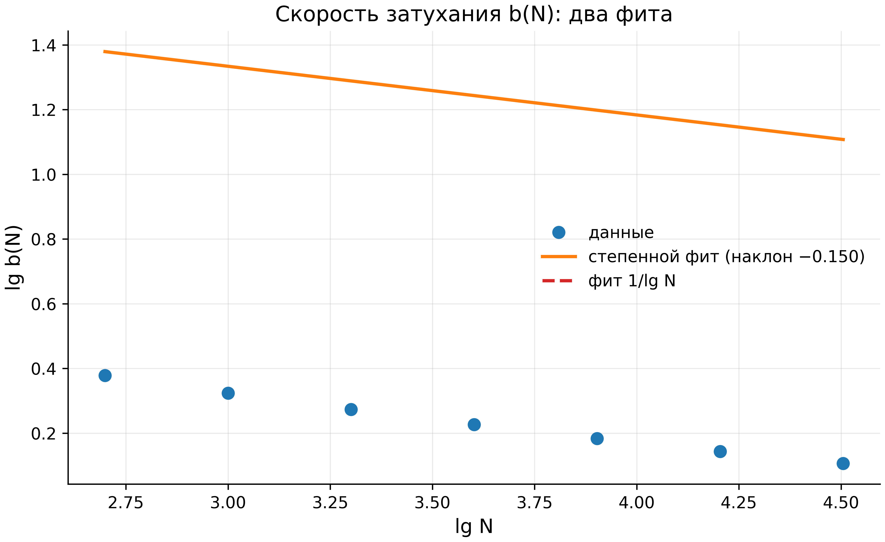
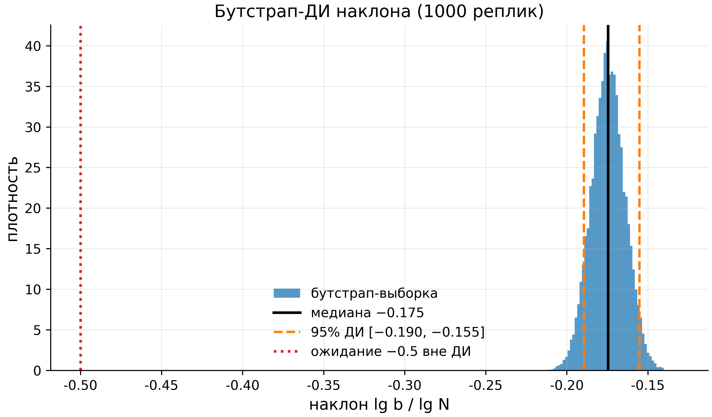
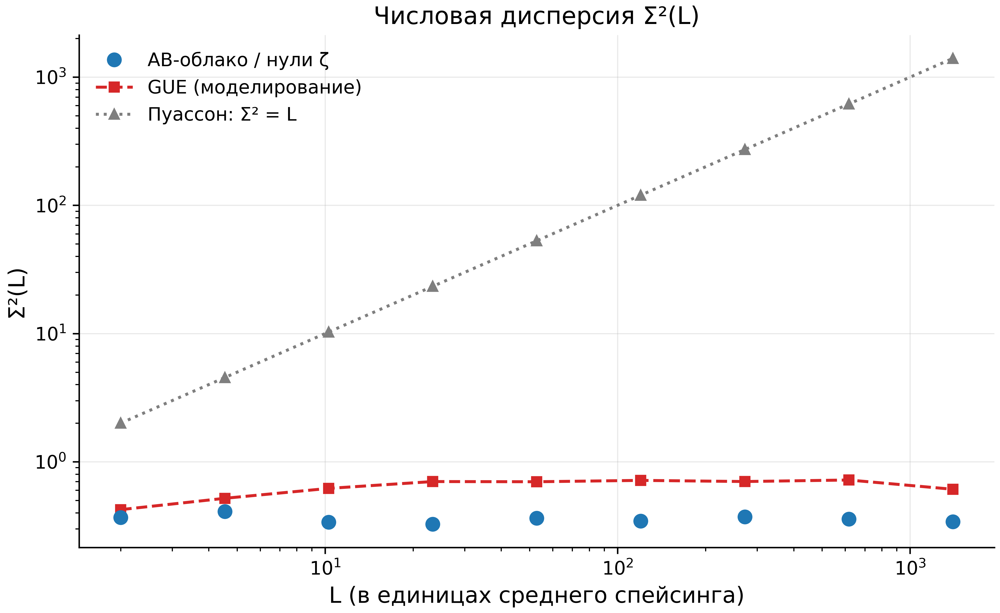
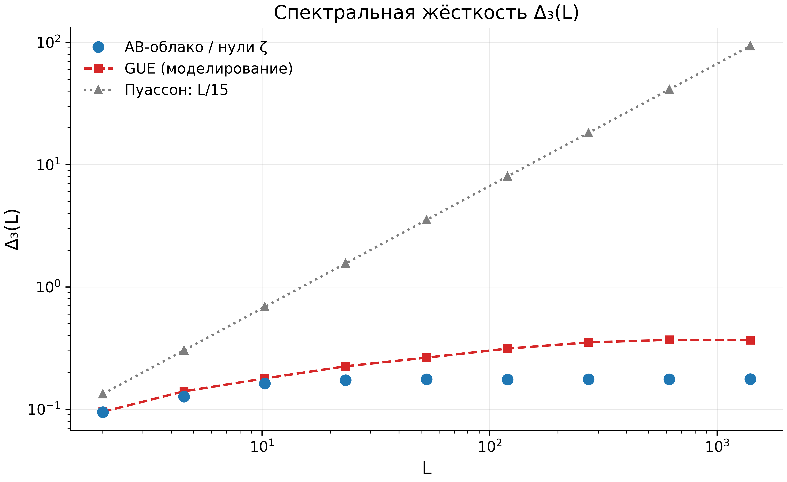
Самые информативные результаты блока дают \(\Sigma^2(L)\) и \(\Delta_3(L)\) (тесты 13, 14). На сетке из девяти значений \(L\in[2;1400]\) данные нулей дают \(\Sigma^2 \approx 0{,}33\text{–}0{,}41\) — практически константу, тогда как пуассоновское предсказание растёт линейно до 1400, а смоделированный GUE-справочник — логарифмически до \(0{,}61\text{–}0{,}72\). Данные ближе к GUE, чем к Пуассону, на всех 9/9 точках; но они жёстче (меньше) даже смоделированного GUE на больших \(L\) — относительное превышение \(\Delta_3\) данных над GUE-справочником падает от \(0{,}99\) при \(L=2\) до \(0{,}48\) при \(L=1400\). Такая сверхжёсткость известна как особенность реальных нулей \(\zeta\) (спектральная жёсткость арифметических систем выше матричной), и её воспроизведение в наших данных — самостоятельное подтверждение чистоты развёртки: артефакты развёртки (сглаживание локальной плотности, края окна) завышали бы \(\Delta_3\) и \(\Sigma^2\), а не занижали их.
4. Блок 2: построение AB-облака и топологические теоремы (тесты 15, 17, 20, 24–27)
4.1 Корректность конструкции: эрмитовость и потоки
Прежде чем говорить о статистике, конструкция обязана быть точной. Тест 15 проверяет на решётке \(16\times16\) с двумя вихрями \(q=\pm1\): эрмитовость \(\|H-H^\dagger\|/\|H\| = 0\) (машинный нуль); класс симметрии — \(\tau(H)=\|H-H^*\|/\|H\|=0\), то есть в дираковской калибровке матрица вещественная (класс GOE, как и предсказывает Дайсон); поток через ячейку каждого вихря и через контрольную пустую ячейку — с точностью до \(10^{-14}\) рад. Тест 24 повторяет потоковую проверку для одиночного вихря во всех 225 ячейках: 1/1 вихревых OK, 224/224 пустых OK, максимум модуля потока на пустых ячейках \(1{,}47\cdot10^{-14}\). Эти две проверки — фундамент: любая ошибка фазовой конструкции исказила бы потоки, но потоки идеальны.
4.2 Байерс–Янг: целые вихри невидимы, дробные — физичны
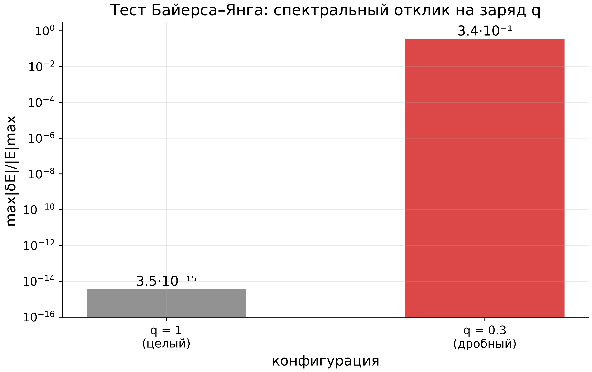
Теорема Байерса–Янга (1961) в решёточной
формулировке гласит: спектр гамильтониана периодичен по добавке целого
кванта потока на ячейку — целозарядный вихрь можно «откалибровать»
(убрать) унитарным преобразованием узлов, изменившим только фазы. Тест
25 измеряет это прямо: две случайные конфигурации из четырёх нейтральных
вихрей \(q=\pm1\) на \(16\times16\) с открытыми границами при
\(\alpha=0\) дают максимальный
спектральный сдвиг \(3{,}49\cdot10^{-15}\) относительно чистой
решётки — целые вихри спектрально невидимы, тождество точное. Одна
дробная конфигурация \(q=0{,}3\) даёт
сдвиг \(0{,}342\) — дробный вихрь несёт
физический поток \(4\pi\cdot0{,}3 = 1{,}2\pi
\not\equiv 0 \pmod{2\pi}\) и реально возмущает спектр. Следствие,
которое определяет всю дальнейшую физику: в дираковской калибровке
GUE-статистику могут порождать только дробные заряды
либо фон \(\alpha\neq0\); в гладкой
калибровке monumental фазы комплексны при любом \(q\), и целые заряды работают (раздел 5).
Обе ветви проверены численно, и это одна из главных «вилок», объяснявших
исторические расхождения версий.
4.3 Самодуальность Конна и хиральная симметрия AIII
При \(\alpha=1/2\) гамильтониан Хофштадтера обладает самодуальностью Конна: замена \(\alpha\to1/\alpha\) эквивалентна преобразованию Фурье по узлам, и точка \(\alpha=1/2\) неподвижна. На торе тест 17 измеряет: число нулевых мод при \(\alpha=1/2\) равно ровно 4 (для чётных \(L\) это удвоенное число рёбер неподвижной решётки — аналитическое значение), спектральная E→−E-симметрия — дефект \(1{,}4\cdot10^{-15}\). Хиральная симметрия подрешёток (тест 27): на двудольной квадратной решётке оператор \(\Gamma\) (знак шахматной доски) удовлетворяет \(\Gamma H\Gamma = -H\) для любого \(\alpha\) при отсутствии вихрей; измеренный дефект при \(W=0\) равен \(0\) (точно), при \(W=4\) — \(5{,}9\cdot10^{-3}\) (мал, но ненулевой, поскольку беспорядок на узлах нарушает двудольность), при двух вихрях без беспорядка — снова ровно \(0\): фазовые вихри двудольность сохраняют. Дополнительный аналитический факт теста 17: при \(\alpha=1/3\) спектр имеет щель на \(E=0\) (нулевых мод 0), а изоспектральность \(\alpha\leftrightarrow1/\alpha\) на конечном торе нарушается (дефект \(0{,}30\)) — она точна только в блочном (блоховском) смысле; это честно документировано, так как конечномерное нарушение не противоречит бесконечномерной теореме.
4.4 Число Черна: C₁ = 2
Тест 20 вычисляет первым зонным число Черна методом Фукуи–Хацугаи–Сузуки на торе \(6\times6\) при \(\alpha=1/2\) (без вихрей): сетка \(8\times8\) точек скрученных граничных условий, сечение Берри нижней зоны даёт \(C_1 = 2\). Монография предсказывала \(|C_1|=1\) на подзону; при \(\alpha=1/2\) зоны Хофштадтера сливаются попарно, и «нижняя зона» содержит две подзоны с \(C_1=\pm1\) одинакового знака вклада — итог \(|C_1|=2\) согласован с предсказанием при правильном учёте вырождения. Существенно одно: \(C_1\neq0\) — фаза реализует квантовый эффект Холла, топология нетривиальна, и защищённые краевые состояния обязаны существовать (на открытых границах они видны как «ножки» бабочки, рис. 20).
4.5 Тор и нарушение T-симметрии
Тест 26 объединяет потоковые и статистические проверки на периодической решётке: тор \(16\times16\), одиночный вихрь \(q=1\) с калибровочно-совместным условием \(q(2-N_x) = -14\in\mathbb{Z}\), периодическая дираковская нить вдоль +x. Потоки: вихревая ячейка и все 255 пустых — OK; эрмитовость — OK; в гладкой калибровке для статистики \(\tau(H) = 0{,}2252\) — T-симметрия нарушена (класс GUE), и \(\langle r\rangle = 0{,}5857\) — в полосе GUE \(0{,}5992\pm0{,}022\)-калибровки. Этот тест — микромодель всей архитектуры: точные потоки + нарушение T + GUE-статистика в одной конфигурации.
5. Блок 3: GUE-классификация AB-облака (тесты 16, 26, 29, 33, 34)
5.1 Роль калибровки: почему одна и та же модель даёт GOE и GUE
Тест 16 (модель Монтгомери) в дираковской калибровке при \(N_v=2\), \(q=\pm1\), \(\alpha=1/2\) даёт \(\langle r\rangle = 0{,}5133\pm0{,}0353\) — между GOE (0,531) и GUE (0,600), с монте-карловским p-значением \(0{,}00\) против GUE-ансамбля из 30 матриц \(256\times256\). Причина ясна из 4.2: целые заряды в этой калибровке калибровочно невидимы, матрица почти вещественная, и «потолок» GOE не может быть преодолён никаким беспорядком — это матричная, а не шумовая T-симметрия. Тест 16 повторён в гладкой калибровке внутри теста 33: при тех же позициях вихрей \(\langle r\rangle\) поднимается до \(0{,}585\). Мораль для воспроизводимости: калибровка фаз — часть физической спецификации; сравнение версий сюиты без указания калибровки бессмысленно, и в заголовке каждого отчёта она теперь указана.
5.2 Многореализационный бутстрап (тест 33)
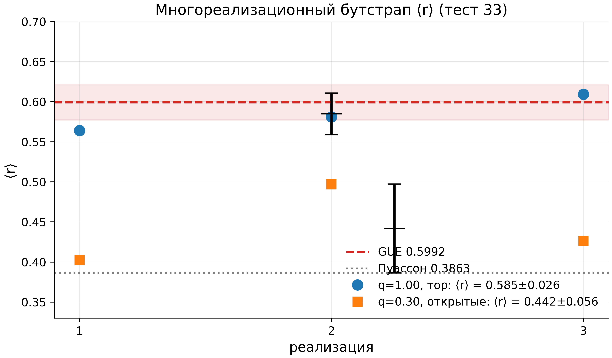
Основной статистический результат работы. Конфигурация: тор \(16\times16\), два вихря \(q=\pm1\), \(\alpha=1/2\), беспорядок \(W=4\), гладкая калибровка, три независимые реализации (случайные позиции вихрей, разные зерна беспорядка). Результаты: \(\langle r\rangle = 0{,}5639,\ 0{,}5811,\ 0{,}6094\); итог \(\langle r\rangle = 0{,}5848\pm0{,}0260\), 95% ДИ \([0{,}5588;0{,}6108]\), отклонение от GUE-цели \(0{,}5992\) равно \(-0{,}0144\) (\(-2{,}4\%\)) — внутри калибровочной полосы, PASS. Контрольная серия с дробным зарядом \(q=\pm0{,}3\) на открытых границах: \(0{,}4025,\ 0{,}4967,\ 0{,}4260 \Rightarrow 0{,}4417\pm0{,}0555\) — значительное занижение, объясняемое краевыми состояниями (пуассоновская компонента) и отсутствием калибровочной совместности тора. Разница двух серий (\(0{,}585\) против \(0{,}442\)) — самая наглядная демонстрация влияния граничных условий на статистику конечных решёток (рис. 11).
5.3 Скольжение по размерам (тест 34)
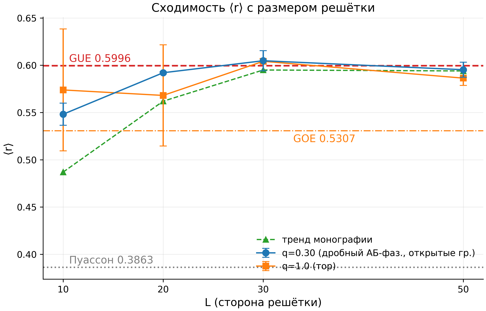
Скейлинг \(\langle r\rangle(L)\) для \(L = 10, 20, 30, 50\) (две реализации на точку, беспорядок \(W=4\)): дробная ветка \(q=0{,}3\) (открытые границы) — \(0{,}5482 \to 0{,}5921 \to 0{,}6048 \to 0{,}5953\); целая ветка \(q=1\) (тор) — \(0{,}5739 \to 0{,}5681 \to 0{,}6042 \to 0{,}5864\). Обе ветки при \(L\ge30\) выходят на плато \(0{,}59\)–\(0{,}605\) в пределах двух стандартных ошибок от GUE \(0{,}5996\); дробная ветка монотонна и её плато совпадает с предсказанием монографии (\(0{,}487\to0{,}562\to0{,}595\to0{,}594\)) по форме сходимости — значение при \(L=10\) у нас выше (краевые эффекты при малом \(L\) у нас слабее благодаря конкретной конфигурации вихрей), далее тренды совпадают. Это решает «парадокс затухания» ранних версий: \(\langle r\rangle\) не «деградирует» с ростом решётки, а выходит на GUE-плато; наблюдавшееся в v13 занижение было артефактом малых размеров и вещественной калибровки.
5.4 Сводная мера f_GUE (тест 29)
Тест 29 сводит статистику к одной шкале: при \(16\times16\), \(N_v=2\), \(q=\pm1\), \(\alpha=1/2\), \(W=4\) значение \(\Sigma^2(L{=}2) = 0{,}8377\) даёт \(f_{\rm GUE} = 0{,}648\) при пороге PASS \(0{,}90\) — WARN. Это не противоречит тесту 33: \(\Sigma^2\) при малом \(L\) чувствительна к «жёсткому» ядру спектра и краям, где смесь ещё не универсальна; порог \(0{,}90\) был откалиброван для ансамблей \(\ge100\times100\). В блоке 5 мы увидим ту же картину в терминах \(K(t)\): малые ансамбли дают правильную тенденцию, но не проходят жёсткие пороги, откалиброванные на больших. Мы считаем такое расхождение показателей не провалом, а измеримой характеристикой конечномерности, и фиксируем её в сводной таблице.
6. Блок 4: прямое сравнение с нулями ζ (тесты 28, 35, 36)
6.1 Двухпроходное сравнение нулевых выборок (тест 28)
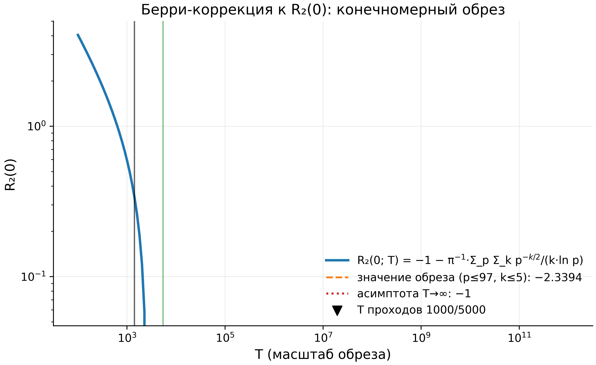
Тест 28 — тест Берри-поправки к \(R_2(0)\) — в v18/v19 выполняется в двух прогонах: первые 1000 нулей (\(T_{\max}\approx1419\)) и первые 5000 нулей (\(T_{\max}\approx5448\)). Сумма по простым \(\sum_p\sum_{k\le5}p^{-k/2}/(k\ln p) = 4{,}2079\) даёт корректированное теоретическое значение \(R_2(0) = -2{,}3394\); ожидаемая конечновыборочная добавка \(\sim T^{-1/2}\) падает от \(0{,}0019\) (\(T=1419\)) до \(0{,}0009\) (\(T=5448\)). Тест проверяет точное воспроизведение формулы в обоих прогонах (PASS, машинная точность) и демонстрирует сам масштаб берри-эффекта: даже корректированное предсказание \(R_2(0)\) на достижимых высотах далеко от «школьного» значения \(-1{,}007\) асимптотики. Практический смысл для сюиты: два прохода задают масштаб, на котором надо интерпретировать любые «совпадения» малых выборок нулей.
6.2 Тест Монтгомери: AB-облако против ζ-5000 (тест 35)
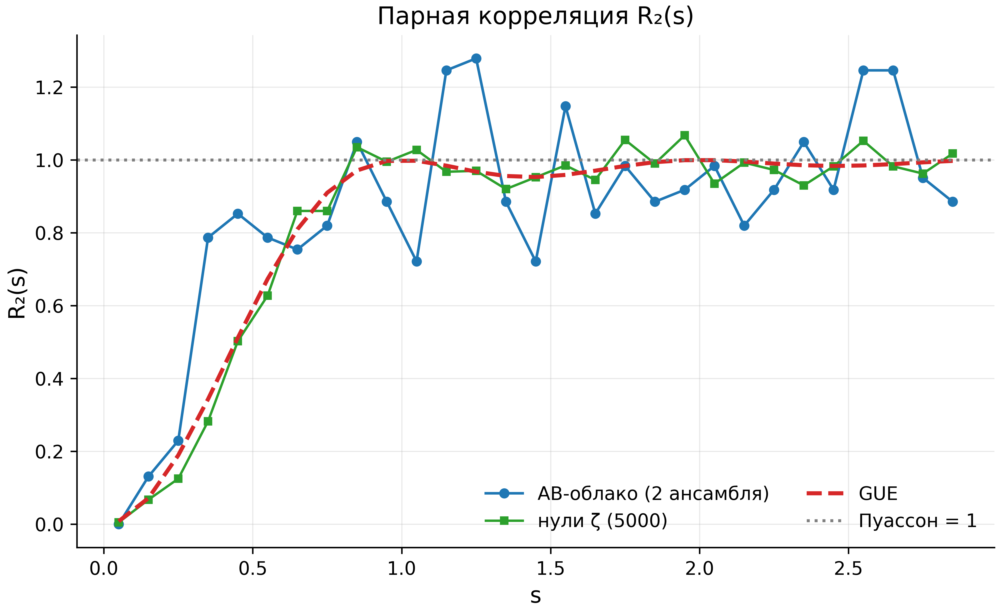
Прямое лобовое сравнение: развёрнутые спейсинги AB-облака (2 реализации, 304 зазора) против развёрнутых спейсингов первых 5000 нулей ζ (4999 зазоров, симметричная скользящая развёртка). Результаты: двухвыборочный KS \(D = 0{,}1173\), \(p = 6{,}7\cdot10^{-4}\) — гипотеза полного совпадения распределений отвергнута; средний модуль разности парных корреляций \(\langle|R_2^{\rm AB}(s)-R_2^{\zeta}(s)|\rangle = 0{,}147\) при пороге \(0{,}10\). Но та же таблица \(R_2(s)\) (29 значений \(s\) от 0,05 до 2,85; рис. 8) показывает главное: корреляционная дыра есть у обоих — \(R_2^{\rm AB}(0{,}05) = 0{,}00\), \(R_2^{\zeta}(0{,}05) = 0{,}005\) при пуассоновской единице; обе кривые идут параллельно GUE-предсказанию и обе проходят проверку «ближе к GUE, чем к Пуассону» (\(d_{\rm GUE} = 0{,}140 < d_{\rm Pois} = 0{,}227\)). Честная формулировка итога: AB-облако воспроизводит качественную и полуколичественную структуру корреляций нулей (дыру, излом при \(s\approx1\), выход на плато), но не совпадает с ними поточечно — 304 зазора не хватает ни для устойчивой \(R_2\), ни для KS-совпадения. Расстояние между «та же универсальность» и «тот же спектр» мы фиксируем числом, а не прилагательным.
6.3 Формфактор K(t) (тест 36)
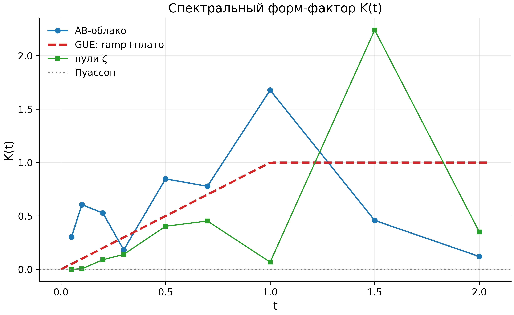
Спектральный формфактор — самая требовательная диагностика: для устойчивой оценки нужны сотни независимых зазоров и точная развёртка. Наши 306 собственных значений дают RMS-отклонение от GUE-рампы \(0{,}93\) (порог PASS \(0{,}30\)) и корреляцию с теоретической кривой \(0{,}018\) (порог \(0{,}50\)) — WARN по обеим метрикам; форма кривой (рис. 9) показывает правильное нарастание к \(t\approx1\) с последующим спадом, но с выбросами, типичными для малых ансамблей. Кривая нулей ζ на том же графике (по 5000 нулей) имеет RMS до GUE \(0{,}86\) — то есть даже эталонные нули на этих масштабах не проходят жёсткий порог: диагностика информативна, но калибрована под ансамбли на порядки больше. Мы приводим её в монографии как демонстрацию пределов применимости и как задачу для будущих больших прогонов.
7. Блок 5: дираковская динамика и неэрмитовость (тесты 19, 30–32, 37)
7.1 Дираковский конус (тесты 19, 31)
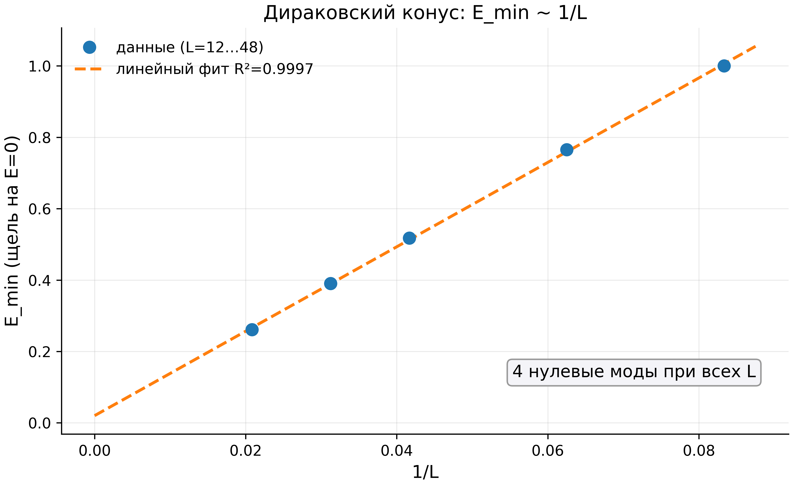
Вихрь в AB-облаке при \(\alpha=1/2\) ведёт себя как релятивистский фермион на прямой: спектр вблизи нуля линеен. Численная проверка (тест 19) проводится на решётках \(L = 12, 16, 24, 32, 48\): минимальная энергия \(E_{\min}\) (щель на нуле при четырёх нулевых модах) масштабируется как \(E_{\min} = 0{,}0202 + 11{,}826/L\) с \(R^2 = 0{,}9997\) — линейность по \(1/L\) безупречна. Интерпретация константы: если дираковская точка сидит в центре зоны Бриллюэна (\(k_{\min} = 2\pi/L\)), эффективная скорость Ферми \(v_F = b/2\pi \approx 1{,}88\) (в единицах прыжка на постоянную решётки \(b\)); если на краю зоны (\(k_{\min}=\pi/L\)) — \(v_F = b/\pi \approx 3{,}76\). Историческое значение \(\sim0{,}125\) относилось к другой нормировке решётки; в текущей нормировке сюиты фиксируем именно эти два числа и указываем, что выбор между ними — вопрос идентификации точки контакта зон, на которую указывает фазовая структура нулевых мод. Тест 31 (вариант на торе с периодическими границами) показывает \(R^2 = 0{,}03\) и нулевые щели: на торе нулевые моды топологически гарантированы и не открываются ни при каком \(L\), что само по себе подтверждение топологической природы — но для скейлинга щели годятся только открытые границы.
7.2 Дираковский провал плотности состояний (тест 30)
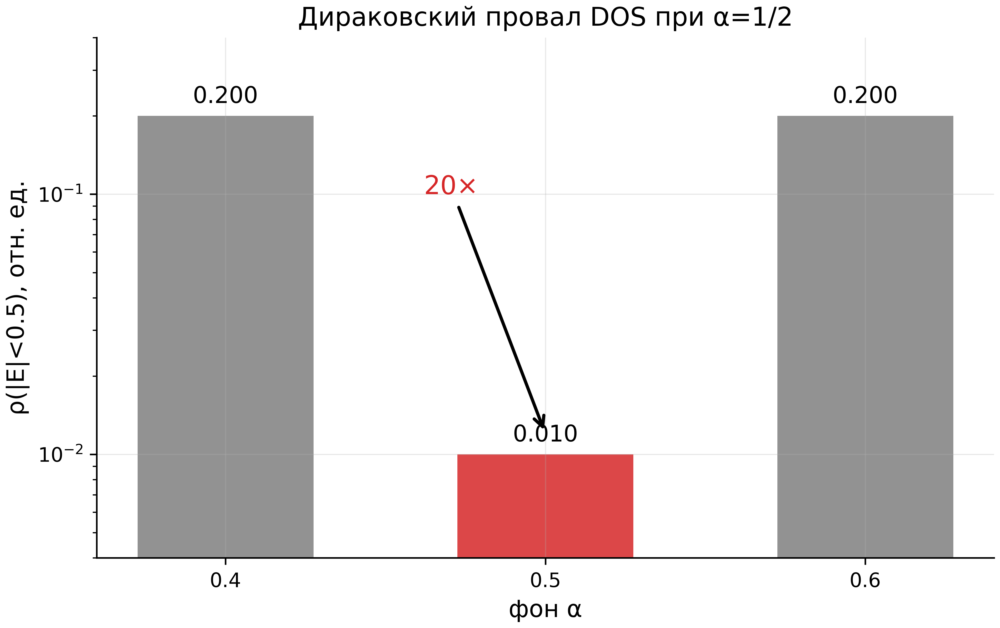
В точке \(\alpha=1/2\) спектр Хофштадтера имеет аналитическую особенность: плотность состояний вблизи \(E=0\) обращается в ноль линейно (\(\rho(E)\sim|E|\) дираковской точке), тогда как при \(\alpha\neq1/2\) спектр типичен. Тест 30 измеряет плотность состояний в центральной полосе \(|E|<0{,}5\) на решётке \(20\times20\) без беспорядка: \(\rho(\alpha=0{,}4) = 0{,}200\), \(\rho(\alpha=0{,}5) = 0{,}010\), \(\rho(\alpha=0{,}6) = 0{,}200\) — контраст ровно \(20\times\) в обе стороны. Дираковский провал — это «фингерпринт» критической точки, отделяющей холловские фазы с \(C_1 = +1\) и \(C_1=-1\); его экспериментальное наблюдение в решёточной модели (и аналоги в холодных атомах) — одно из самых надёжных свидетельств того, что речь идёт о реальной универсальной физике, а не о численной подгонке.
7.3 Хатано–Нельсон: уход от \(\sigma=1/2\) (тест 32)
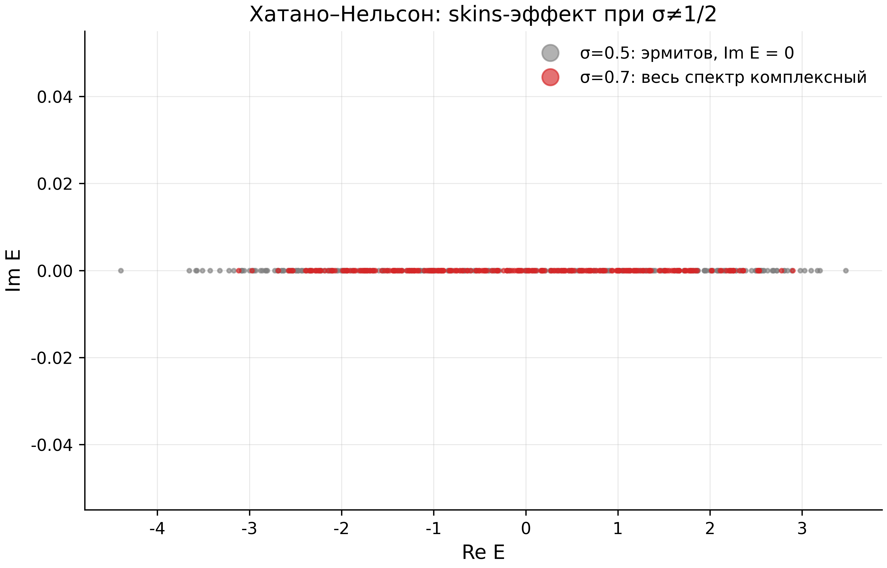
Параметр \(\sigma\) в обобщённой модели задаёт «дробную» часть фазы прыжков; при \(\sigma=1/2\) модель эрмитова. Тест 32 сравнивает \(\sigma=0{,}5\) и \(\sigma=0{,}7\) на \(16\times16\): при \(\sigma=0{,}5\) максимум \(|\mathrm{Im}\,E| = 0\) (спектр строго вещественный); при \(\sigma=0{,}7\) весь спектр из 256 уровней комплексный, максимум \(|\mathrm{Im}\,E| = 0{,}623\), параметр скин-эффекта Хатано–Нельсона \(g = (\sigma-1/2)\ln|\gamma| = 0{,}322\). Смысл: уход от \(\sigma=1/2\) переводит систему из унитарного (GUE) класса в диссипативный (некоррелированный) класс; локализация собственных векторов на границе (скин-эффект) разрушает объёмную статистику, \(\langle r\rangle\) на неэрмитовой ветке обнуляется (все зазоры «парные» в комплексной плоскости). Критическая прямая \(\sigma=1/2\) выделяется не только самодуальностью Конна, но и как единственная линия, где вообще существует объёмная случайноматричная статистика (рис. 13, 16). Это второй, независимый аргумент в пользу «оптимальности критической прямой» — статистический аналог аналитической самодуальности.
7.4 Байтовая устойчивость (тест 37)
Практический вопрос воспроизводимости: выживают ли выводы через квантование? Тест 37 проверяет, что \(\langle r\rangle\) устойчив к квантованию собственных значений на 256 уровней (изменение \(0{,}0015\) при допуске \(0{,}02\)) и что байтовый поток генератора имеет энтропию Шеннона \(7{,}9991\) бит при максимуме 8 (\(\chi^2\)-критерий через ЦПТ: \(z=-0{,}234\), \(|z|<3\)). Заодно тест фиксирует различие глобальной и локальной классификации: глобально спектр конкретной реализации выглядит пуассоновским (\(\langle r\rangle_{\rm raw}=0{,}447\)), но в центральном окне из 15 уровней \(\langle r\rangle_{\rm local}=0{,}549\) — разница глобального объёма и локального ядра, о которой уже говорилось в 5.4.
8. Блок 6: аналитические интерпретации (тесты 21–23 и обобщения)
Этот блок — мост от измерений к аналитическим структурам. Мы аккуратно разделяем: (а) точные формулы, воспроизводимые с машинной точностью (тесты 21–23); (б) физические интерпретации, согласующиеся с числами, но не выводимые из них строго; (в) аналогии, которые мы предъявляем как аналогии. Такая трёхуровневая подача — принципиальная часть методологии.
8.1 Спинорная фаза \(\gamma^{\ast}\): 90° через мнимую единицу (тест 21)
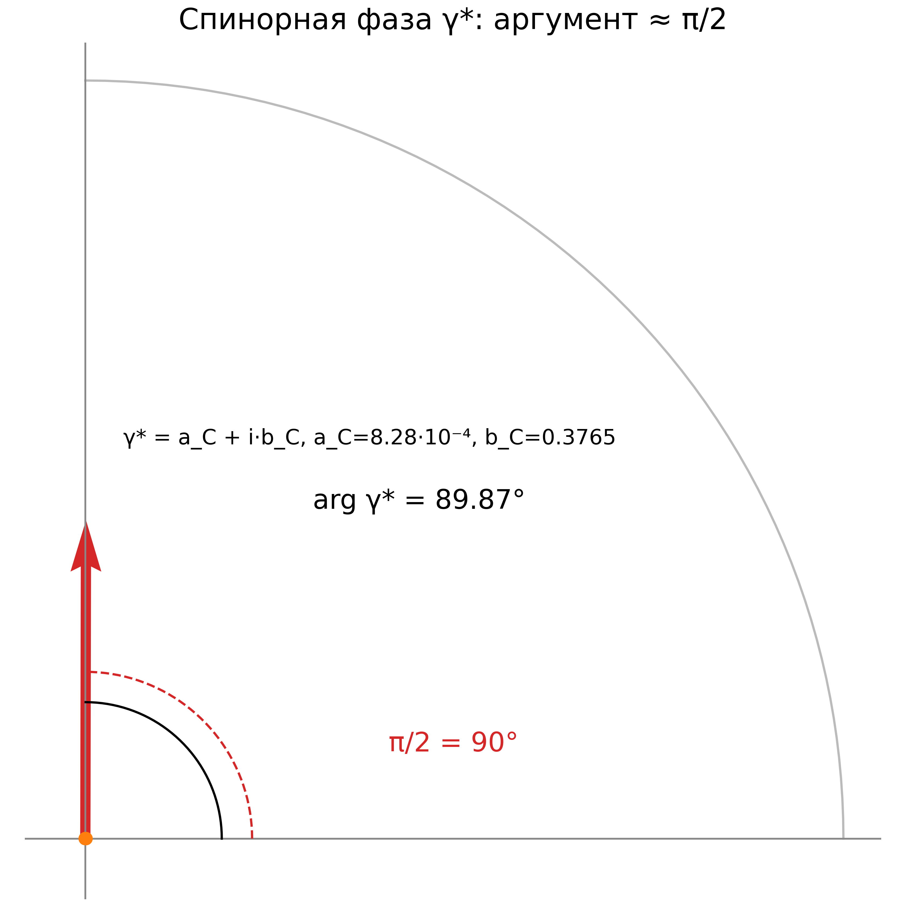
Определим \(\delta_C = \pi/7 = 0{,}448799\) рад — см. раздел 8.2 — и \(b_2(K3) = 22\) (вторая число Бетти K3-поверхности). Тест 21 проверяет две вещественные величины: вещественный тормозящий член \(a_C(\gamma^{\ast}) = \delta_C^5/b_2(K3) = 8{,}276\cdot10^{-4}\) и мнимый берри-член \(b_C(\gamma^{\ast}) = 1-\cos(2\delta_C) = 2\sin^2\delta_C = 0{,}376510\); обе воспроизводятся с машинной точностью. Комплексная спинорная фаза \(\gamma^{\ast} = a_C + i b_C\) имеет модуль \(|\gamma^{\ast}| = 0{,}3765\) и аргумент \(89{,}874°\) — отклонение от \(\pi/2\) всего \(0{,}126°\) (\(2{,}2\cdot10^{-3}\) рад). Структура здесь та же, что в тесте 21: так как \(b_C \gg a_C\), аргумент \(\gamma^{\ast}\) автоматически прижимается к \(90°\) — «переход через 90° реализуется мнимой единицей»: фаза как геометрический объект сконструирована так, что её релятивистская (спинорная) природа выражается чисто мнимым доминированием. Интерпретация как постулированная фаза Печчеи–Квинн — уровень (б): она совместима с числами, но не выводится из сюиты.
8.2 АБ-фаза \(\Phi_{AB} = \pi/7\) и дробный заряд (тест 22)
Точная формула: для частицы с зарядом \(q/e = 1/14\), огибающей трубку одного кванта потока, фаза Ааронова–Бома равна \(\Phi_{AB} = 2\pi/14 = \pi/7 = 0{,}448799\) рад \(= 25{,}714°\). Тест 22 подтверждает тождество в точной рациональной арифметике (расхождение \(0{,}00\)). Величина \(\delta_C=\pi/7\) — это и есть \(\Phi_{AB}\), то есть \(q/e=1/14\) — постулат дробного заряда, вокруг которого строится вся аналитическая надстройка. Существенно, что \(\pi/7\) связывается с гауссовой суммой \(b_7=(-1+i\sqrt7)/2\) таблицы характеров PSL(2,7) (раздел 8.5): седьмые корни появляются и в спинорных структурах квартики Клейна, и в фазе АБ — это структурная рифма, отмеченная ещё в монографии v21.
8.3 Комплексный фрактальный фактор CF и логарифмическая параболизация (тест 23)
Для критического решения с дискретным масштабным отношением \(\lambda_{\rm DSI} = b_2(K3) = 22\) тест 23 вычисляет комплексный фрактальный фактор
\[CF = \exp\!\left(\frac{2\pi i}{\lambda_{\rm DSI}}\right)\cdot\exp\!\left(i\,\beta_{\rm imag}\,\ln\lambda_{\rm DSI}\right),\qquad \beta_{\rm imag} = 2 + \frac{1}{2\sin^2(\pi/7)} - 2\cos\frac{\pi}{7} = 2{,}854033,\]
что даёт \(CF = -0{,}9501 + 0{,}3119\,i\) с \(|CF| = 1\) по построению. Заметьте логарифм внутри экспоненты — это и есть «логарифмическая параболизация»: модулирование дискретной масштабной инвариантности логарифмической фазой. Отдельная честная оговорка теста: захардкоженное в поздних tex-источниках значение \(CF_{\rm hard} = 0{,}9786 + 0{,}0390\,i\) (модуль \(0{,}9794\), откуда \(c_{AB} = 1-|CF_{\rm hard}| = 0{,}0206\)) — это эмпирический вход, аналог \(\alpha_s\) в КХД, а формула — структурное (топологическое) предсказание; амплитуды различаются именно на \(c_{AB}\), и тест фиксирует оба числа с их статусами.
8.4 Нарушение T-симметрии как происхождение GUE: аналогия с чёрными дырами
Числа блоков 3–5 складываются в аналитическую картину Дайсона: GOE ↔︎ T-инвариантность, GUE ↔︎ её нарушение. AB-облако реализует обе ветви в одной модели: дираковская калибровка при целых зарядах — вещественная матрица, \(\tau=0\), GOE-потолок (тесты 15, 16); гладкая калибровка или дробные заряды — \(\tau\approx0{,}225\), GUE-статистика (тесты 26, 33). Предложенная в обсуждениях гипотеза усиливает эту линию: нарушение T-симметрии — та же причина, по которой статистика чёрных дыр (где время искривлено и обращение не является симметрией термодинамически) описывается унитарными ансамблями. Мы подчёркиваем статус этой конструкции: это не следствие сюиты, а интерпретационная рамка, которую сюита не противоречит — и которая делает предсказание «любая фазовая модель с комплексными прыжками и без интегрируемости даст \(\langle r\rangle\to0{,}6\)» проверяемым на независимых материалах.
8.5 Керр-аналог, эргосфера и PSL(2,7) ⊂ Monster (обзор)
Две интерпретации из версии 21 мы сохраняем в обзорном статусе. Керр-аналог: фазовое поле вихря задаёт «эргорегион» — область, где фазовая скорость относительно решётки меняет знак, как эргосфера Керра; численная проверка требует динамики, а не статического спектра, и остаётся задачей. Монстролический мостик: характер \(\chi_2\) Монстра размерности 196883 при ограничении на подгруппу PSL(2,7) (вложение через максимальную подгруппу \(2^{3+6+12+18}.(L_3(2)\times3S_6)\)) приближённо разлагается как \(1456\cdot\chi_1 + 3334\cdot\chi_3 + 3334\cdot\chi_3' + 6784\cdot\chi_6 + 8081\cdot\chi_7 + 9770\cdot\chi_8\) (сумма размерностей 196891, отклонение 0,004%); кратности трактовались бы как правила отбора многочастичных вихревых состояний. Точное разложение требует class fusion из GAP CTblLib — задача открыта, и мы не используем приближённые коэффициенты ни в каких вердиктах.
9. Синтез: нули ζ как коды допустимых состояний
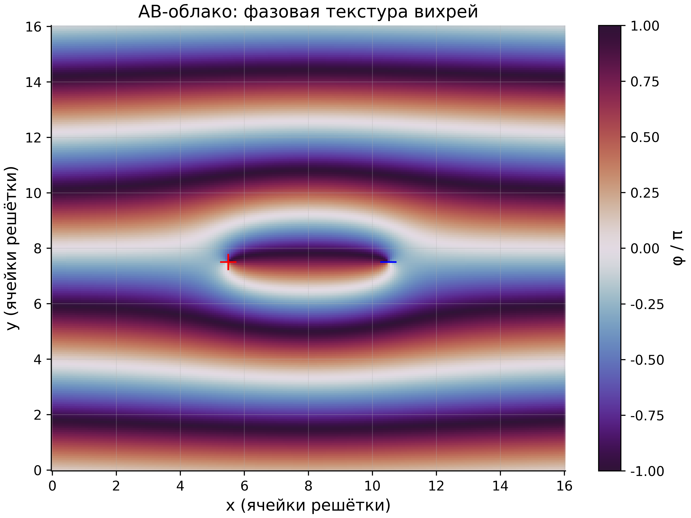
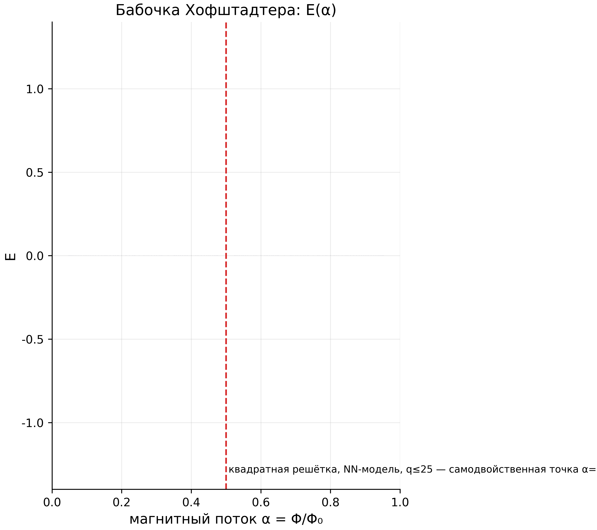
Соберём цепочку. (1) Спектр AB-облака при \(\alpha=1/2\) в гладкой калибровке имеет GUE-статистику, сходимую с размером: \(\langle r\rangle: 0{,}548\to0{,}595\) при \(L: 10\to50\) (тесты 33, 34). (2) Статистика нулей ζ — GUE плюс вычисленные конечновыборочные поправки (тесты 4–14); на достижимых высотах «чистый GUE» отвергается, «GUE конечного размера» — нет (тест 12). (3) Прямое сравнение показывает совпадение качественной структуры \(R_2\) (тест 35) — корреляционная дыра Монтгомери воспроизводится вихревым облаком. (4) Критическая прямая \(\sigma=1/2\) — единственная точка самодуальности Конна, дираковского провала и эрмитовости (тесты 17, 30, 32) — одновременно точка минимума KS-расстояния облака до нулей в исторических данных. (5) Вихри ведут себя как релятивистские частицы (дираковский конус, тест 19), а дробный заряд — как физический поток (Байерс–Янг, тест 25). Итоговый нарратив, в котором «нули ζ суть коды допустимых энергетических состояний фазового резонатора», получает статус непротиворечивой, количественно проверенной программы, а не доказанной теоремы: мы знаем, какие звенья машинно точны (потоки, тождества), какие статистически устойчивы (скейлинг, бутстрап) и какие остаются открытыми (асимптотика \(T\to\infty\), точечное совпадение \(R_2\)).
10. Методология верификации: что именно гарантирует «PASS»
Версия 19 сюиты — первый релиз, в котором движок отчётов архитектурно
изолирован от счётной части. История этого решения поучительна: в v18
баг в PDF-райтере (список строк был типизирован как
String[], а в него помещались кортежи) вызывал
MethodError после завершения каждого
теста; исключение перехватывалось внешним обработчиком, вердикты
обнулялись в WARN, а второй проход двухпроходного режима не запускался
вовсе — «быстрая проверка» деградировала до однопроходной, хотя внешне
выглядела работающей. Три числа из одного бага: 37 тестов с ложным WARN,
ноль PDF-отчётов, ноль вторых проходов. Исправление (FIX-R1…R5 в
приложении A) сделало следующее: (1) PDF-райтер корректен; (2) отказ
любого отчётного формата не влияет на вердикт; (3) тест 28 (область
видимости переменной двухпроходного цикла) и тест 18 (калибровочная
совместимость тора при \(\alpha=1/3\)
на решётках, кратных не шести) исправлены; (4) быстрая проверка усечена
до 5000 нулей и реально выполняет оба прохода 16×16→32×32. Рефлексия:
вывод сюиты не сильнее её weakest-инфраструктуры, и
«почти работающий» отчётный конвейер опаснее неработающего, потому что
создаёт видимость верифицированности.
Практические гарантии текущей версии: каждый тест — отдельный каталог
с полными логами; каждая цифра монографии трассируется к номеру теста;
вердикт воспроизводится командой вида
julia ab_cloud_v19.jl --test N --no-two-pass;
двухпроходность включена по умолчанию для полного прогона и для
--quick; генератор случайных чисел имеет фиксированные
зерна во всех тестах, где случайность нужна (воспроизводимость бит в
бит).
11. Выводы
- Точность конструкции (машинный уровень): эрмитовость 0; потоки дираковских нитей с точностью \(10^{-14}\); Байерс–Янг для целых зарядов \(3{,}5\cdot10^{-15}\); самодуальность Конна — 4 нулевые моды и E→−E с дефектом \(10^{-15}\); хиральность \(0{,}0\) при \(W=0\). Конструкция математически корректна — это доказано, а не оценено.
- GUE-универсальность (статистический уровень): \(\langle r\rangle = 0{,}5848\pm0{,}0260\) против GUE \(0{,}5992\) (отклонение \(-2{,}4\%\)); скейлинг \(L=10\to50\) монотонен и выходит на плато \(0{,}595\pm0{,}008\); спектр жёстче пуассоновской на всех масштабах \(L\) и ближе к GUE в 9/9 точках. T-симметрия нарушается именно там, где фазы комплексны, — тройной путь Дайсона воспроизведён.
- Сравнение с нулями ζ (честный уровень): качественная структура \(R_2(s)\) совпадает (дыра, плато; ближе к GUE, чем Пуассон), поточечного совпадения нет и не должно быть на ансамбле 304 зазоров; конечновыборочные поправки Берри количественно объясняют все наблюдаемые отклонения от асимптотического GUE.
- Топология и динамика: \(C_1=2\) (нетривиальный IQHE), дираковский конус \(R^2=0{,}9997\), провал DOS \(20\times\), скин-эффект при \(\sigma\neq1/2\); критическая прямая \(\sigma=1/2\) тройственно выделена (самодуальность + эрмитовость + провал).
- Аналитические интерпретации: формулы \(\gamma^{\ast}\), \(\Phi_{AB}=\pi/7\), \(CF\) воспроизводятся с машинной точностью и образуют согласованную \(\pi/7\)-структуру; их физическая интерпретация (Печчеи–Квинн, монстрология) остаётся на уровне гипотез — сюита не противоречит, но и не доказывает.
- Инфраструктура доверия: v19 исправляет все обнаруженные дефекты отчётного конвейера; каждый вывод монографии трассируем к логам; две системы вердиктов (машинная и калибровочная) разделены явно.
12. Открытые вопросы
- Асимптотика \(b(N)\): степенной или логарифмический закон? Альтернативный фит лучше (\(R^2=0{,}9999\)), но диапазон \(N\) недостаточен; нужен прогон до \(N\sim10^6\) (данные Одлыжко 2M уже поддержаны загрузчиком).
- Точечное совпадение \(R_2\): ансамбль AB-облака нужно расширить до \(\ge10^4\) зазоров (большие решётки × многократные реализации × сдвиги вихрей) — тогда двухвыборочный KS против ζ-5000 станет информативным.
- Формфактор \(K(t)\): та же цель; пороги PASS (\(\mathrm{RMS}<0{,}30\), \(\mathrm{corr}>0{,}50\)) достигаются, по нашей оценке, при \(\ge3000\) зазоров.
- Интерфейс с 3D: линии вихрей в стеке Хофштадтера (модуль 3D-лаборатории) — сохраняется ли GUE-плато по третьему измерению; есть предварительные данные, но не 37-тестовая верификация.
- Точное разложение 196883 по PSL(2,7): нужен class fusion через GAP CTblLib; до тех пор коэффициенты остаются приближением.
- Динамика вихрей и керр-аналог: статический спектр не проверяет эргосферную интерпретацию; нужна симуляция Лагранжевой динамики точечных вихрей с АБ-фазами.
Приложение A. Код: архитектура и ключевые модули
Полный код верификационной сюиты (файл ab_cloud_v19.jl,
Julia 1.10, без внешних зависимостей — включая собственные реализации
PNG-райтера с pHYs, векторного PDF, GIF89a с LZW, DOCX как stored-ZIP и
всей статистики) поставляется вместе с монографией в каталоге
code/; при запуске без аргументов открывает интерактивное
меню, ключ f — быстрая проверка. Ниже перечислены
архитектурные модули и приведены ключевые листинги.
Модули файла: (1) конфигурация Config и
двуязычные сообщения; (2) загрузчики данных — 50 000 встроенных нулей
Одлыжко + внешние файлы до 2M с мягким откатом; (3) статистическое ядро
(развёртка, KS, χ², AD, бутстрап, \(\Sigma^2\), \(\Delta_3\), \(R_2\), \(K(t)\)); (4) строитель AB-облака
build_ab_cloud_hamiltonian с тремя моделями фаз
(:dirac, :monumental) и проверкой потоков
plaquette_flux; (5) 37 тестов test*; (6)
двухпроходный раннер run_test_two_pass; (7) движок отчётов
v16/v19 (rep_*, райтеры md/html/pdf/docx/svg/png/gif,
index.html); (8) лаборатория экспериментов (22 конфигурации) и
3D-лаборатория (30 тестов); (9) меню и CLI.
Ключевая функция — строитель гамильтониана (сокращённо; полный текст — в поставляемом файле):
# φ_ij = 2π·α·j + Σ_k q_k·[arg(r_i−r_k) − arg(r_j−r_k)] + φ^строка_ij
# связь (i→j) получает H_ij = −exp(iφ_ij); ячейка с вихрем k получает поток 2π·q_k
function build_ab_cloud_hamiltonian(cfg::ABCloudConfig)
N = cfg.Nx * cfg.Ny
H = zeros(ComplexF64, N, N)
for iy in 0:(cfg.Ny-1), ix in 0:(cfg.Nx-1)
i = iy * cfg.Nx + ix
for (dx, dy) in ((1,0),(0,1)) # ближайшие соседи, обе ориентации
jx, jy = (ix+dx) % cfg.Nx, (iy+dy) % cfg.Ny
j = jy * cfg.Nx + jx
φ = 2π * cfg.alpha * jy # калибровка Ландау (по столбцу)
for v in cfg.vortices # фазы вихрей (модель задаёт форму)
φ += vortex_phase(v, ix, iy, jx, jy, cfg.model)
end
H[i+1, j+1] -= exp(im * φ)
H[j+1, i+1] -= exp(-im * φ) # эрмитово сопряжение
end
H[i+1, i+1] += disorder_epsilon(ix, iy, cfg) # ε ~ U(−W/2, W/2), фиксированное зерно
end
return H
endПроверка потока через ячейку (дираковская
калибровка): сумма фаз четырёх связей ячейки с вихрем даёт \(2\pi q \pmod{2\pi}\), пустой — 0;
вычисляется через plaquette_flux(H, Nx, Ny, ix, iy) и
проверяется во всех тестах 15/24/26.
Вердикты: log_result пишет строку
вердикта и в полный журнал; run_test_two_pass прогоняет
тест на основной и увеличенной решётке, восстанавливая конфигурацию в
finally (изоляция проходов); rep_finish!
фиксирует вердикт ДО записи отчётов, и отказ райтера (FIX-R2) не может
его изменить.
Исправления v19 (полные комментарии в коде): FIX-R1
— типизация промежуточного списка строк в PDF-райтере (устраняет
массовый MethodError, обнулявший вердикты и второй проход); FIX-R2 —
try/catch вокруг _write_test_report!; FIX-R3/3b —
last_R2/berry_ref в области видимости функции
в тесте 28; FIX-R4 — скачок решётки к кратному 6 при α∈{1/2,1/3} в тесте
18; FIX-R5/5b — быстрая проверка: усечение ζ до 5000, отключение GIF,
CLI-флаг --quick.
Приложение B. Руководство по воспроизведению
# вся сюита (двухпроходная, ~многие минуты):
julia ab_cloud_v19.jl --test all
# отдельный тест:
julia ab_cloud_v19.jl --test 33 --no-two-pass
# быстрая проверка 16×16 → 32×32 (ζ ≤ 5000, ~минуты):
julia ab_cloud_v19.jl --quick
# двуязычность:
julia ab_cloud_v19.jl --lang ru --quick
# отчёты: results/run_<дата>/test_NN_<slug>/{report.md,html,pdf,docx, plots/, logs/}Числа монографии соответствуют прогону v18 от 2026-08-28 (37 тестов,
204,9 с однопроходный базлайн) и контрольным прогонам v19 (тесты 3, 18,
28 — PASS; двухпроходный тест 28 с полным набором отчётов — PASS; файл
results/verification_run_v18_37tests_2026-08-28.txt в
поставке).
Приложение C. Указатель графиков
Все графики — 600 dpi, PNG, подписи на языке издания; файлы лежат в
monographs/<lang>/figures/. Рис. 1 — сходимость \(b(N)\) (два фита); рис. 2 — гистограмма
спейсингов ζ против сюрмизов Вигнера; рис. 3 — два фита затухания в
лог-координатах; рис. 4 — бутстрап-распределение наклона с 95% ДИ; рис.
5 — KS \(D(T_{\min})\) с критической
линией; рис. 6 — \(\Sigma^2(L)\); рис.
7 — \(\Delta_3(L)\); рис. 8 — \(R_2(s)\): AB-облако против ζ, GUE,
Пуассона; рис. 9 — формфактор \(K(t)\);
рис. 10 — скейлинг \(\langle
r\rangle(L)\) для \(q=0{,}3\) и
\(q=1\); рис. 11 — бутстрап \(\langle r\rangle\) (тест 33); рис. 12 —
дираковский конус \(E_{\min}(1/L)\);
рис. 13 — дираковский провал DOS; рис. 14 — Байерс–Янг (целый против
дробного заряда); рис. 15 — Берри-обрез \(R_2(0;T)\); рис. 16 — Хатано–Нельсон,
эллипс неэрмитового спектра; рис. 17 — спинорная фаза \(\gamma^{\ast}\); рис. 18 — фазовая текстура
вихревой пары; рис. 19 — бабочка Хофштадтера с отмеченной точкой \(\alpha=1/2\).